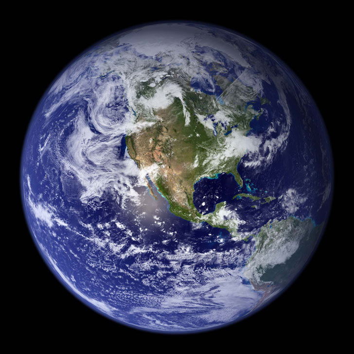
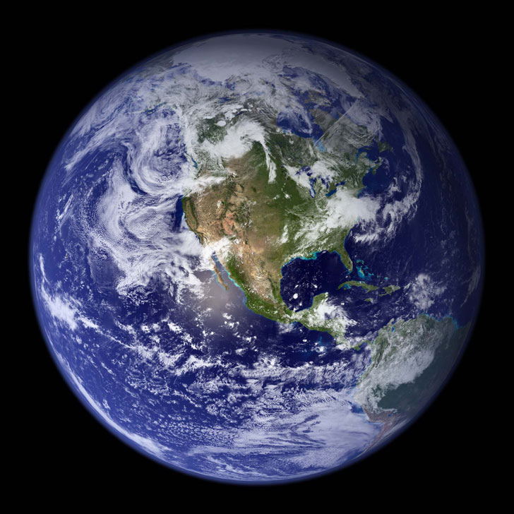

Земля является третьей планетой от Солнца и самой большой из планет земной группы. При этом она всего лишь пятая по величине планета с точки зрения размера и массы в Солнечной системе, но, что удивительно, самая плотная из всех планет в системе (5,513 кг/м3). Примечательно также, что Земля является единственной планетой в Солнечной системе, которую сами люди не называли в честь мифологического существа, — ее название происходит от старого английского слова «ertha», что означает почву. Считается, что Земля образовалась где-то около 4.5 миллиарда лет назад, а в настоящее время является единственной известной планетой, где возможно существование жизни в принципе, а условия таковы, что жизнь в буквальном смысле кишит на планете. Земля и другие планеты Солнечной системы Земля и другие планеты Солнечной системы На протяжении всей истории человечества люди стремились понять свою родную планету. Тем не менее, кривая обучения оказалась очень и очень сложной, с большим количеством ошибок сделанными по пути. Например, еще до существования древних римлян, мир понимался как плоский, а не сферический. Вторым наглядным примером является вера в то, что Солнце вращается вокруг Земли. Лишь только в шестнадцатом веке, благодаря работе Коперника, люди узнали, что на самом деле Земля просто планета, вращающаяся вокруг Солнца.Возможно, самым главным открытием относительно нашей планеты в течение последних двух столетий является то, что Земля является как обычным так и уникальным местом в Солнечной системе. С одной стороны, многие из ее характеристик довольно заурядны. Возьмем, например, размер планеты, ее внутренние и геологические процессы: ее внутренняя структура практически идентична трем другим планетам земной группы в Солнечной системе. На Земле происходят практически те же геологические процессы, формирующие поверхность, которые свойственны подобным планетам и многим планетарным спутникам. Однако при всем при этом, Земля обладает просто огромным количеством абсолютно уникальных характеристик, которые разительно отличают ее от практически всех известных на сегодняшний день планет земной группы.